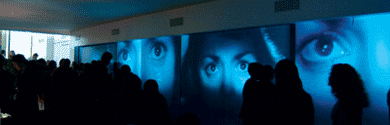

About
C.STEM è is a project of Associazione Culturale 32 Dicembre, with the collaboration of Teknemedia.net
Staff
Organization: 32 Dicembre
Coordinator: Fabio Franchino
Production: Teknemedia.net
Supporters: Allegretti Contemporanea - Progetto Cluster
Media Partners: Miele, altrovideo
Criticism text: Domenico Quaranta
Photos: Andrea Macchia
How to get there
Sede 32 Dicembre - 32dicembre.com
Via Artisti 21 - 10122 Torino - Italy
AB+ Club - progettocluster.com
Via Porta Palatina 23/B angolo Piazza Cesare Augusto - 10122 Torino - Italy
Press


Copyright © 2006 - some rights reserved | XHTML 1.1 / CSS2
| Introduction | Generative Ars | Interviews | Program | Artists | Artworks | Informations | Contacts | ToDo.to.it |
| Introduction | Generative Ars | Interviews | Program | Artists | Artworks | Informations | Contacts | ToDo.to.it |